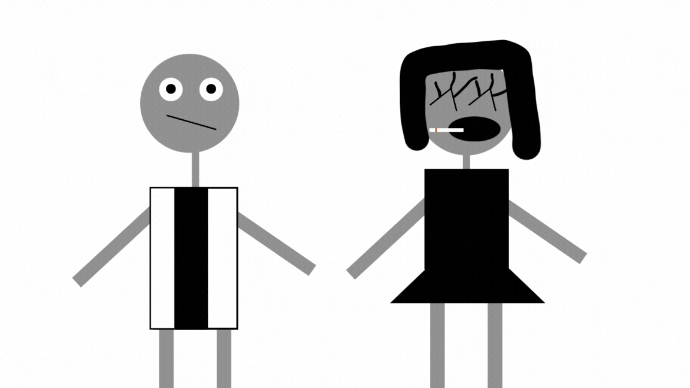

Carregando informações...


Bagre
"como vai?", talvez venha no sobre
existem muitas bactérias, sindromes, virus, cortes de veia no cerebro(AVC hemorragico), fungos e blá blá blá
a medicina é sempre importante com links
Doenças mais comuns
Doenças
Doenças mentais
bactérias
Ginebagre
nossas redes sociais
TEA
exemplo

Canceres
Cancer de colo de utero
Parasitoses

vetenaria
@ 2025 Victor Company